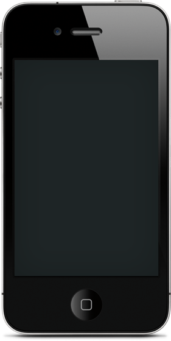
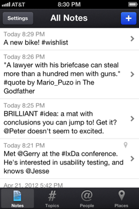

-
One home for it all.
Capturing everything in one place means you'll always know where to find them.

-
For your eyes only.
Threadnote is private, giving you a place to store your most personal thoughts.
-
Organize by topic.
Add tags to notes by including a "#" before a word. It's the perfect way to #StayOrganized.

-
Tie notes to people.
Put an "@" before someone's name and the note becomes linked to that person.
-
Save the location.
Choose to tie a note to your current (or any) location, then view your notes on a map later.

-
Lots of other goodies.
Names auto-suggested from your Address Book, easy export / sharing, and more!


